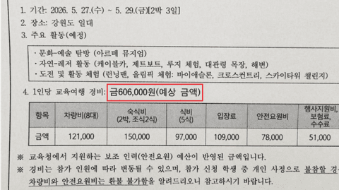
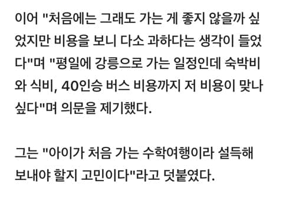
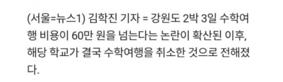

취재 시작하자마자 없던일로 ㅋㅋㅋㅋㅋㅋㅋㅋ



취재 시작하자마자 없던일로 ㅋㅋㅋㅋㅋㅋㅋㅋ
인생 어떻게 살은거냐...ㅉㅉ
설명해줄래야 해줄수가 없는 영역이라 안타깝다
아무튼 결론만 말하자면 수학여행좋다
난 친구들하고 왁자하게 떠들고 자잘하게 사고도 치고 밤에 마피아게임하고 시골가게에서 두근두근 하면서 술 사고 그 술먹다 걸려서 선생님이랑 같이 한잔하고 그 모든 것들이 좋았는데
한 15년 전 이야기지? 요즘은 ㅈ되더라.
이해되는 가격인데..?
그건 성인 커플이나 가족이 리조트나 호텔 갈때 가격이고 ㅋㅋㅋ
정확해. 맞음. 리조트나 호텔가는거임 그래서 저가격임
우리 때 처럼 20명이 한방이 아님 3~5인실이 한방, 반별로 버스탐,
교사들도 초근 그거 얼마된다고 안받아버림 = 안전 문제 발생 안전 요원 채용
민원들어옴 귀찮음 = 사람뽑아서 돈으로 해결, 버스 더부를래, 방도 좋은 걸로할래, 밥 맛없다니까 부폐로해 가 되니까 저렇게 비용이 늘어나는거임
강원도 60만원 비싼거맞음
저견적? 비싼거아님
차라리 안가고 부모님이랑 여행가는게 낫겠다 라는생각이 드네
선생입장에서는 안가는게 이득임.
남겨먹는다한들 뭐 뒷돈꼽아줄것도 아니고 이득이없어
어딜 가는지 어떤걸 먹는지 어떤숙소에서 자는지 모르는데 비싸다 싸다 판단할수가 있나
그러니까 ㅋㅋ 자세한 경비지출내역을 뒷면에 써둬야 학부모들도 아 이 정도로 가면 60만원 낼만하지! 할텐데
세상 물정, 물가, 행사 모르는 불편러들이 수학여행도 소풍도 운동회도 조져버리는구나
안가면 교사도 편해
비싸면 유스호스텔에서 한방에 6명씩 자게 하던가
우리뗀 한방에 15명-20명 일자로 자야햇엇는데 ㅠㅠ ㅋㅋㅋ
반찬은 고등어조림이 주메뉴지만 실체는 고등어맛 무조림. 아직도기억나네 ㅋㅋㅋ
애들이 적어서 비싼거지 ㅋㅋㅋㅋ 시발 안가면 교사만 좋지
비슷한 일정 개인으로 가면 55만원 정도 나오네
취재때메 그런게 아닌거 같은데.. 골치가 아팠겠다..
쎄게 불러서 수학여행을 취소하려는 계획대로
응 안가
학생수도 별로 없어서 나눌걸 많이 못 나눈건가
저건애초에 선생도 가기싫어서 저랬다면
취재 들어가자마자 접는 거 보면 본인들도 비싼 건 알았나 봄
선생들이야 안가면 아리가또지
60이면 연해주도감
교장교감교사들 신나서 회의해서 취소시켰을 거 같은데 ㄹㅇ 민원 주셔서 아리가또네
2박 3일 일정에서 인당 60이 싼 건 절대 아닐텐데. 심지어 자부담 60이면 별도 보조금이나 교부금은 따로 있을 거 아냐. 그 금액은 왜 빼고 말하는 지 모르겠네. 왜 제대로 된 반박은 못하고 그냥 안 가니깐 선생은 좋을 뿐이다 이런 말만 하냐?
안갈라고 윈윈한거아녀?
개인적으로 간다 치고 계산하면 과한 견적 아닌거 같은데
보조금까지 치면 과하려나... 얼마나 나오는지 모르겠네
학부모 입장에서도 선뜻 내기엔 고민되는 금액인 마당에 취소되는게 교사도 편하다고 하는거라면 어쨌든 해피엔딩이네
혼자 2박3일가서 흥청망청 놀아도 60 힘들긴함
혼자 2박3일가서 흥청망청하면 60 껌인데?
뭐하고 노시는지 지식전수좀 난 맨날 낮에 구경하고먹고 저녁에먹고마시고자서 생각보다 저렴하게 놈
일본 수학여행갈때 80쯤 냈는데 ㅋㅋ 많이 비싸졌네
비싼곳만 골라 가는 거 같아서 슈킹은 아닌 거 같은데, 보조금이나 지원금이 있다면 또 얘기가 달라지지
우리땐 10~20선이었던거같은데 아닌가
잠을 어디서 자는지 모르겠는데 2박에 15만원이면은
2 3인실 쓰는건가?
안전 요원비도 78000원이 1인당 들어가는 거면
1요원이 5 6 명정도 봐주는건가?
식비 5식에 97이면 1식에 2만원정도면 엄청 높고
행사 지원비 보험료 수수료 이게 5만원
보험료라고 해도 1만원도 안 될 거 같은데.
전체적으로 무조건 비싼 거긴 함
컨텐츠대비 비싼건 아닌데
수학여행으로는 너무 과해
컨텐츠가 너무 과하네. 안전요원비도 비싸고, 나머지는 제대로 책정한듯
싱가폴 수학여행갔을때 3박 5일 110만원이었는데
선생님들 도대체 어떻게 후려치신겁니까?
수학여행 왜 가는지도 난 모르겠음.
개근거지 라면서 있는집 이면 자체적으로 학기중에 여행 다녀오더구만. 수학여행? 수능 이던 내신 이던 못 보면 인생 꼬이는데 그 시간에 공부를 하라고 해야지.
개도국에서 태어나 선진국에서 살아서 그런지 몰라도 난 수학여행에 좋은 기억이 있지만 여자 때문에 좋았던거지 수학 이나 여행 때문에 좋은건 아니었음.
(그냥 여친 이랑 눈만 마주쳐도 좋았던 시절임)